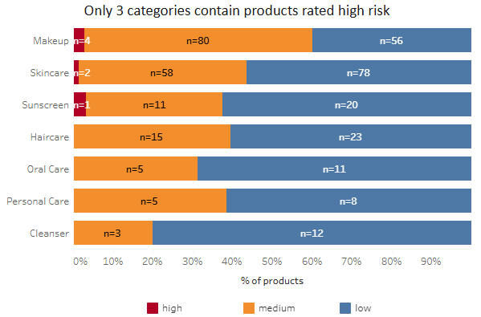
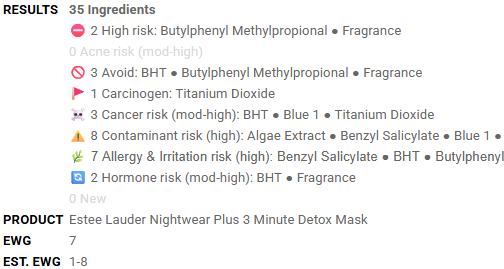
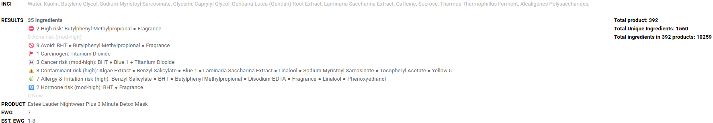
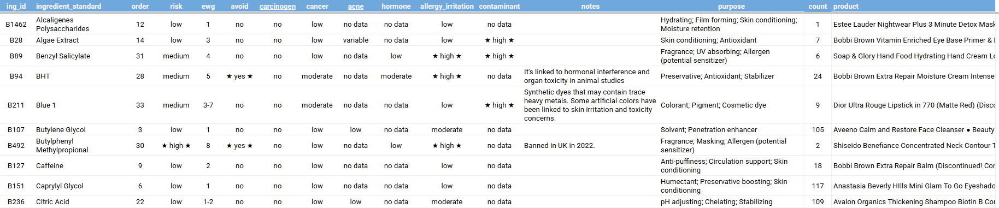
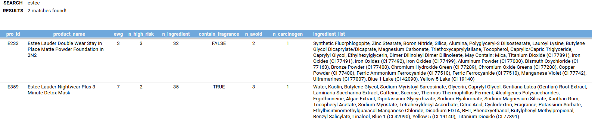
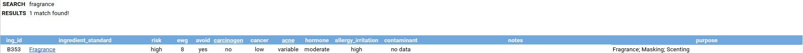

Karen Winter
Data Analyst. A portfolio project built with SQL, Tableau and Google Sheets.
SELECT COALESCE(risk,'total') risk, COUNT(*) AS ingredients, CONCAT(ROUND(COUNT(*)/(SELECT COUNT(*) FROM ingredient)*100,2),'%') pct_distro FROM ingredient GROUP BY risk WITH ROLLUP ORDER BY GROUPING(risk), ingredients DESC;


About me
I worked at a large telecommunications company for about 15 years in a few different roles. Here are some of the reporting tasks I did there:
- Built weekly sales performance reports and presentations for leadership and the Director's staff meetings.
- Developed the Quality Door Tracker in Google Sheets, consolidating 1,200+ outlet records and achieving a 95% data completion rate; leadership leveraged this data to drive strategic brand improvements.
- Analyzed operational cost data in Excel with pivot tables and slicers, which helped cut costs by $9K in two months.
- Generated and distributed daily and monthly sales dashboard reports to key stakeholders.
- Analyzed Net Promoter Score (NPS) results to help improve customer satisfaction.
- Designed standardized reporting templates to reduce manual effort while ensuring consistent formatting across all deliverables.
- Built a Promo Finder tool in Google Sheets with QUERY functions. Field teams could search promotions by date, which sped up our answers to escalations.
Throughout my career, people have known me as a problem solver. Account managers often came to me when they had a difficult customer escalation and needed help. I also like sharing what I've learned on my own with my team. I made troubleshooting guides in Google Slides that listed the resources and steps for fixing different system and promotion issues. I'm very organized as well, which made it easy to find the right documents when I had a complex problem to solve.
I love learning, which is why I spent the past few years building skills I can use at any job. At first I wanted to learn everything. I started with cloud computing and earned the AWS Certified Solutions Architect - Associate certification after about a year of studying. Along the way I also took courses in Linux, networking, Bash and Python. Then I realized I couldn't keep it all, because I wasn't using those skills every day. I had to pick one thing and really focus on it, and I landed on data analysis. It's something I've always wanted to do, and I already had experience with it from my reporting work. Since then I've studied SQL and Tableau through Analyst Builder.
My INCI project is how I put those skills to use. It has two parts: the Cosmetic Ingredient Analysis and the Ingredient Lookup Tool. It started with my own skincare and makeup. I used to believe that a higher price tag guaranteed the best quality and most effective products. I relied solely on brand advertising and customer reviews. I first learned about "clean" beauty in 2022 and started paying more attention to the ingredients in my products. I wanted a tool that would give me an overview of the ingredients in a product and their risks, so I could form my own judgment on what the product is designed to do. That's when I started designing my own tool and gathering data on each ingredient I came across. A product's ingredient list is also called an INCI list (International Nomenclature of Cosmetic Ingredients), which is where the project gets its name. After building and utilizing the tool, I learned that advertising and reviews aren't reliable on their own. I use this tool every time I shop for new products. It's a huge time-saver, especially when I'm comparing several products at the same time.
My projects
Cosmetic Ingredient Analysis
I collected the ingredient lists for 392 beauty and personal care products and analyzed which ingredients show up in the products with higher EWG scores and other safety concerns. Built with Google Sheets, MySQL and Tableau.
View projectIngredient Lookup Tool
A Google Sheet I use when I shop. I paste in a product's ingredient list and it shows the risks for every ingredient, including EWG scores and acne, cancer, hormone, irritation and contamination concerns. It also shows my notes and a list of the products I've used that contain each ingredient.
View projectCosmetic Ingredient Analysis
I collected the ingredient lists for 392 beauty and personal care products by hand. I wanted to see how a product's ingredients relate to its EWG score and other safety concerns.
I used Google Sheets to collect and clean the data, MySQL to analyze it, and Tableau Public to chart it.
Go to: MySQL analysis · Tableau dashboard
The data
I started this sheet just for myself, to keep track of what's in the products I use. When I turned it into a project, I had to clean it up and split it into 4 tables:
- product: one row per product, with its brand, category and EWG score. There are 392 products in 7 categories.
- ingredient: one row per ingredient, with its EWG score range and flags for avoid, carcinogen, acne and more. There are 1,560 ingredients.
- product_ingredient: which ingredients are in which product. There are 10,259 rows.
- ing_map: matches 880 different label spellings to one standard ingredient name.
I standardized brand names with TRIM, PROPER, CLEAN and REGEXREPLACE, made sure the EWG columns only held numbers, removed duplicate products, and cleaned up product names. I also set my own low, medium and high risk tiers.
Where the data comes from
- EWG's Skin Deep database (ewg.org/skindeep): product and ingredient EWG scores, plus the cancer, hormone, allergy/irritation and contaminant columns.
- California Proposition 65 list: the carcinogen column.
- Skinwis ingredient analyzer (skinwis.com/analyzer): the acne risk column (low, medium or high).
- My own choices: the avoid list, the low, medium and high risk tiers, and my notes.
Limits of this data
- These are all products I use, so it's not a random sample of what's on the market.
- EWG scores are one organization's ratings. Other sources may rate the same ingredient differently.
EWG has not reviewed or endorsed this analysis.
MySQL analysis
I loaded the 4 tables into MySQL and wrote 12 queries. Each one starts with the question I wanted to answer. What I found is written under each query.
These results show what goes together in my data. They don't prove that one thing causes another.
Loading the data
I built the 4 tables in Google Sheets first. The Table Data Import Wizard in MySQL Workbench gave me errors, so I created the tables with CREATE TABLE and loaded the data with INSERT statements. To build the rows of values, I used a Google Sheets formula with ARRAYFORMULA, TEXTJOIN and SUBSTITUTE. I ran into three problems along the way:
- Blank and "N/A" values caused errors. They turned out to be ingredients with no EWG score, so I removed them.
- Names with an apostrophe, like Paula's Choice, broke the statement.
SUBSTITUTEdoubles the apostrophe (Paula''s Choice) to fix it. - MySQL reads a backslash (\) as an escape character, so I replaced every backslash with a forward slash.
1. Risk distribution across all the ingredients
SELECT COALESCE(risk,'total') risk, COUNT(*) AS ingredients, CONCAT(ROUND(COUNT(*)/(SELECT COUNT(*) FROM ingredient)*100,2),'%') pct_distro FROM ingredient GROUP BY risk WITH ROLLUP ORDER BY GROUPING(risk), ingredients DESC;
Only 1% of the ingredients (16 of 1,560) are in the high-risk category.
2. Which product categories have the highest share of high-risk products?
SELECT COALESCE(category,'Total') category, SUM(CASE WHEN ewg <= 3 THEN 1 ELSE 0 END) AS low_risk, SUM(CASE WHEN ewg BETWEEN 4 AND 7 THEN 1 ELSE 0 END) AS medium_risk, SUM(CASE WHEN ewg >= 8 THEN 1 ELSE 0 END) AS high_risk, COUNT(*) AS total_product, ROUND(AVG(ewg),1) AS avg_ewg, CONCAT(ROUND(SUM(CASE WHEN ewg <= 3 THEN 1 ELSE 0 END) / COUNT(*) * 100, 1),'%') AS low_risk_pct, CONCAT(ROUND(SUM(CASE WHEN ewg BETWEEN 4 AND 7 THEN 1 ELSE 0 END) / COUNT(*) * 100, 1),'%') AS medium_risk_pct, CONCAT(ROUND(SUM(CASE WHEN ewg >= 8 THEN 1 ELSE 0 END) / COUNT(*) * 100, 1),'%') AS high_risk_pct FROM product GROUP BY category WITH ROLLUP ORDER BY GROUPING(category), SUM(CASE WHEN ewg >= 8 THEN 1 ELSE 0 END) / COUNT(*) DESC, AVG(ewg) DESC;
Sunscreen has the highest share of high-risk products (3.1%), but that's only 1 product out of 32. Makeup has the most high-risk products (4). I also have the most products in makeup, and it has the highest average EWG score (3.9). Overall, the bigger categories tend to have more high-risk products and higher average EWG scores, but it's not a perfect pattern.
3. For brands with at least 5 products, how many of their products are medium or high risk (EWG 4 or higher)?
SELECT brand, COUNT(*) AS n_product, SUM(ewg >= 4) AS medium_high_products, ROUND(SUM(ewg >= 4) / COUNT(*) * 100, 1) AS pct_medium_high, ROUND(AVG(ewg),2) AS avg_ewg FROM product GROUP BY brand HAVING COUNT(*) >= 5 ORDER BY avg_ewg DESC, n_product DESC;
Dior and Shiseido have the highest average EWG scores (about 6.5), and every one of their products is medium or high risk. SKIN1004, Good Molecules and e.l.f. have the lowest (2.2 to 2.3).
4. Which ingredients appear most often across products (top 15)?
SELECT pi.ing_id, i.ingredient_standard, i.ewg, COUNT(DISTINCT pi.pro_id) AS n_product FROM product_ingredient pi JOIN ingredient i ON pi.ing_id = i.ing_id GROUP BY pi.ing_id, i.ingredient_standard,i.ewg ORDER BY COUNT(DISTINCT pi.pro_id) DESC LIMIT 15;
The most common ingredients all have low EWG scores. Water is in 288 products and glycerin is in 231.
5. Which ingredients have a high EWG rating (EWG 8 or higher)?
SELECT i.ingredient_standard, ewg_min, ewg_max, COUNT(DISTINCT pi.pro_id) n_product, ewg_max-ewg_min AS ewg_gap, carcinogen, cancer, avoid FROM ingredient i LEFT JOIN product_ingredient pi ON pi.ing_id=i.ing_id WHERE ewg_max >=8 GROUP BY i.ingredient_standard, ewg_min, ewg_max, carcinogen, cancer,avoid ORDER BY ewg_max DESC, ewg_gap DESC, n_product DESC;
This list helped me decide which ingredients to avoid. I tend to avoid ingredients with a high EWG score (8 or higher) and a small EWG gap (2 or less). A bigger EWG gap means the risk depends on the product formulation (powder vs. liquid). Take carbon black as an example. It's high risk in powder form, but all of my makeup products with carbon black are in liquid form. That lowers the health risk a lot, which is why I don't avoid this ingredient.
I don't avoid most retinoids, even with their high EWG scores. They're one of the best-proven anti-aging ingredients, and the concentration in cosmetic products is low. Retinyl palmitate is the exception. It's on Sephora's Clean Beauty list of ingredients a product must be made without, and none of the other retinoids are on that list. A 2012 study also found it sped up skin tumors in mice exposed to UV light. In my products it shows up in lipsticks and an eye primer I wear during the day, not in anti-aging treatments, so I'd rather skip it.
6. Which products contain high-risk ingredients (EWG 8 or higher)?
SELECT p.pro_id, p.product_name, p.category, p.ewg AS product_ewg, COUNT(pi.ing_id) AS high_risk_ingredient, ROUND(AVG(i.ewg_max),2) AS avg_ewg_high_risk_ing, GROUP_CONCAT(DISTINCT i.ingredient_standard ORDER BY i.ingredient_standard SEPARATOR ', ') AS high_risk_ingredients FROM product p JOIN product_ingredient pi ON p.pro_id = pi.pro_id JOIN ingredient i ON pi.ing_id = i.ing_id WHERE i.ewg_max >= 8 GROUP BY p.pro_id, p.product_name, p.category, p.ewg ORDER BY high_risk_ingredient DESC, avg_ewg_high_risk_ing DESC;
110 products contain at least one high-risk ingredient. I was surprised to see that more than a quarter of the products I use (28%) contain these ingredients.
7. How are fragranced products spread across each category?
SELECT COALESCE(category,"Total") AS category, COUNT(*) AS total_products, COUNT(CASE WHEN contain_fragrance = "True" THEN 1 END) AS fragrance_product, COUNT(CASE WHEN contain_fragrance = "False" THEN 1 END) AS no_fragrance_product, ROUND(COUNT(CASE WHEN contain_fragrance = "True" THEN 1 END)/COUNT(*) *100,2) AS fragrance_percentage, ROUND(AVG(ewg),2) AS avg_ewg, ROUND(AVG(CASE WHEN contain_fragrance = "False" THEN ewg END),2) AS avg_ewg_no_fragrance, ROUND(AVG(CASE WHEN contain_fragrance = "True" THEN ewg END),2) AS avg_ewg_fragrance, ROUND(AVG(CASE WHEN contain_fragrance = "True" THEN ewg END),2) - ROUND(AVG(CASE WHEN contain_fragrance = "False" THEN ewg END),2) AS gap_avg_ewg FROM product p GROUP BY category WITH ROLLUP ORDER BY GROUPING(category), avg_ewg_fragrance DESC;
In every category that has fragranced products, they have a higher average EWG score than the ones without fragrance. Overall it's 5.56 with fragrance vs. 3.15 without. Skincare has the biggest gap (6.21 vs. 3.07), and haircare has the most fragranced products (39%).
8a. What percentage of products in each category contain ingredients I avoid, and how does that affect their average EWG scores?
SELECT COALESCE(category,"Total") AS category, COUNT(*) AS total_product, SUM(n_avoid > 0) AS avoid_products, ROUND(SUM(n_avoid > 0)/COUNT(*)*100,2) AS avoid_percentage, ROUND(AVG(CASE WHEN n_avoid > 0 THEN ewg END),2) AS avg_ewg_avoid, ROUND(AVG(CASE WHEN n_avoid = 0 THEN ewg END),2) AS avg_ewg_no_avoid FROM product GROUP BY category WITH ROLLUP ORDER BY GROUPING (category), avoid_products DESC;
36% of my products (141) contain at least one ingredient I avoid. They average 4.50 vs. 2.96 for products without them, and they score higher in every category. Haircare has the highest share at 58%.
8b. Which ingredients I avoid show up in the most products, and what are their risk profiles?
SELECT i.ingredient_standard, i.ewg_max, i.hormone, i.carcinogen, i.cancer, i.acne, COUNT(DISTINCT pi.pro_id) AS products, ROUND(AVG(p.ewg),2) AS avg_product_ewg FROM ingredient i JOIN product_ingredient pi ON pi.ing_id = i.ing_id JOIN product p ON p.pro_id = pi.pro_id WHERE avoid = 'yes' GROUP BY i.ingredient_standard, i.ewg_max, i.hormone,i.cancer, i.carcinogen, i.acne ORDER BY products DESC, ewg_max DESC;
There are 39 ingredients I avoid, and fragrance is in the most products (59). I avoid ingredients with an ewg_max of 10, except carbon black. It's the only one of those 5 ingredients with an ewg_min of 3, which makes its EWG gap bigger. That means its safety depends on more variables. I also avoid ingredients that can disrupt hormones (preservatives like BHT and parabens).
Synthetic ureas can release formaldehyde, so I avoid those as well. I avoid ingredients that I know break me out, like biotin, VP polymers and glyceryl dioleate, even though they have low EWG scores.
9. Do more ingredients lead to a higher EWG rating?
SELECT CASE WHEN n_ingredient <= 10 THEN '01: 1-10 Ingredients' WHEN n_ingredient <= 20 THEN '02: 11-20 Ingredients' WHEN n_ingredient <= 30 THEN '03: 21-30 Ingredients' ELSE '04: 31+ Ingredients' END AS ingredient_bracket, COUNT(*) AS product_count, ROUND(AVG(ewg), 2) AS avg_ewg_rating, MIN(ewg) AS lowest_ewg, MAX(ewg) AS highest_ewg FROM product GROUP BY 1 ORDER BY 1 ASC;
It does seem like the average EWG score goes up as the ingredient count goes up, from 1.94 for 1-10 ingredients to 4.37 for 31+.
10a. What percentage of my products contain carcinogens? Compare by category, and compare the average EWG with vs. without.
SELECT COALESCE(category,'total') AS category, COUNT(*) AS total_products, SUM(n_carcinogen > 0) AS carcinogen_products, ROUND(SUM(n_carcinogen > 0) / COUNT(*) * 100, 1) AS pct_carcinogen, ROUND(AVG(CASE WHEN n_carcinogen > 0 THEN ewg END),2) AS avg_ewg_with, ROUND(AVG(CASE WHEN n_carcinogen = 0 THEN ewg END),2) AS avg_ewg_without FROM product GROUP BY category WITH ROLLUP ORDER BY ISNULL(category), pct_carcinogen DESC;
36.5% of my products contain at least one carcinogenic ingredient, so I dig into what those ingredients are in 10b. Makeup has by far the highest share (82.9%).
10b. Which carcinogenic ingredients are in my products?
SELECT i.ingredient_standard, i.ewg, i.risk, i.cancer AS ewg_cancer_concern, COUNT(DISTINCT p.pro_id) AS products FROM ingredient i JOIN product_ingredient pi ON pi.ing_id = i.ing_id JOIN product p ON p.pro_id = pi.pro_id WHERE i.carcinogen = 'yes' GROUP BY i.ing_id, i.ingredient_standard, i.ewg, i.risk, i.cancer ORDER BY products DESC;
Only 3 carcinogenic ingredients show up in my products, and I'm not too concerned about 2 of them (titanium dioxide and carbon black).
Tableau dashboard
I built a Tableau Public dashboard with 6 charts to show the main patterns. It's interactive, so you can hover over a chart to see the details.
Clicked something and the charts changed?
Ingredient Lookup Tool
When a product's full ingredient list is pasted into the tool, it gives a snapshot of the product's risks. It also shows each ingredient next to past purchases that contain it.
How it works
- A product's ingredient list is pasted into one cell.
- The sheet splits it into one row per ingredient, in the same order as the label. Order matters because ingredients near the top are used in larger amounts.
- Each ingredient is matched to its standard name using a mapping table, so different spellings on different labels still find the right ingredient.
- It pulls in the EWG score range and the risk flags for each ingredient, plus notes on why an ingredient is on the avoid list.
- It shows which past purchases contain the same ingredient. That helps spot ingredients that have caused breakouts before.
A 46-second recording of the tool in use. It has no sound.
What it flags
The top of the sheet gives a quick summary of the product:
- Total number of ingredients
- High-risk ingredients (EWG 8 or higher)
- Ingredients on the avoid list
- Carcinogen, cancer, hormone, acne, allergy and irritation, and contamination concerns
- New ingredients that aren't in the data yet and need research
Click a screenshot to see it full size.

Below the summary, a table gives the details for every ingredient:
- EWG score, risk flags, purpose and notes
- Stars on every "high" and "yes"
- How many products in the data contain the ingredient, and which ones

There is also a product search and an ingredient search. Typing part of a product name or an ingredient shows every match with its scores and flags.
Product search

Ingredient search

How I built it
The main functions I used are XLOOKUP, FILTER, REGEXREPLACE, LET and LAMBDA. I built the formulas with help from AI tools. I worked through each one until I understood what it was doing, and kept notes on every change in a formula tab.
It took a lot of fixes to get the results right. These are the main ones:
- Splitting the ingredient list. Splitting on commas wasn't enough. An ingredient like 1,2-Hexanediol has a comma in its name, and labels include extras like "may contain," percentages and color codes. I kept adding rules until every ingredient landed on its own row with a clean name.
- Wrong counts. My first formulas read each product's ingredient list as text. They counted "may contain" as an ingredient, and searching for the word "Fragrance" gave wrong results. I rebuilt them to count from the product_ingredient table, and the numbers came out right.
- Scores read as text. Some EWG scores were being treated as text instead of numbers, so they couldn't be compared. Multiplying them by 1 fixed it.
- Order of the results. The results were sorted A to Z at first. I changed them to keep the order on the label, because ingredients are listed from highest to lowest concentration.
The sheet itself stays private because it holds the data I collected by hand. The video and screenshots show how it works.